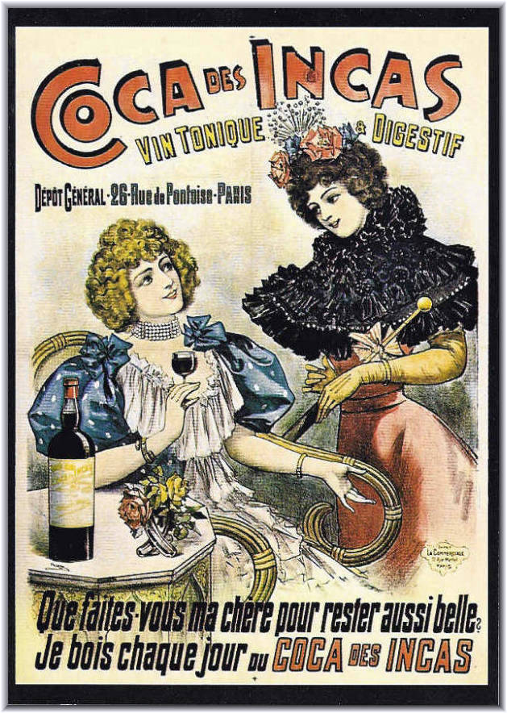
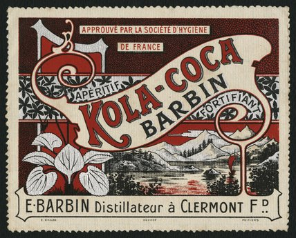
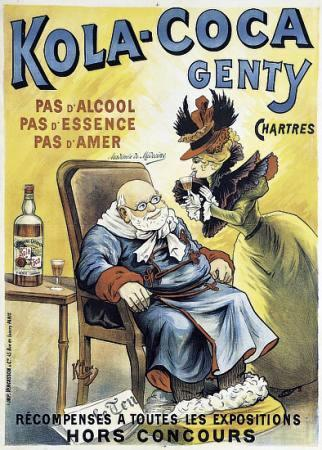
Quelques concurrents français du Vin Mariani
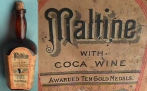
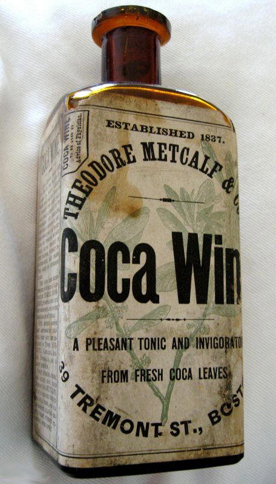
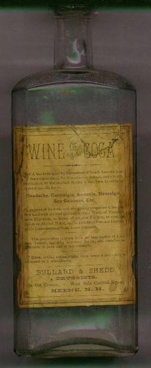
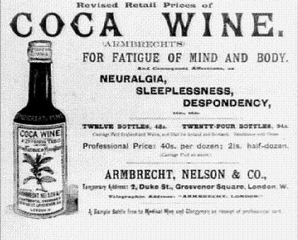
Quelques concurrents étrangers du Vin Mariani
C'est la loi du commerce: le succès appelle toujours la concurrence. Des imitations virent le jour :
Le Ku Klux Klan lutta activement pour le faire interdire, et obtint la prohibition de l'alcool dans l''Etat de Géorgie en 1886.
Pemberton dut reformuler son produit, et remplaça le vin par du soda. En 1906, il dut remplacer la coca par de l'extrait de noix de kola: le Coca-cola était né!
Le vin de coca chanté en breton
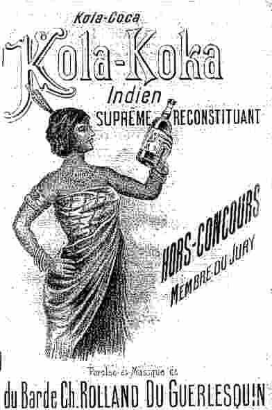
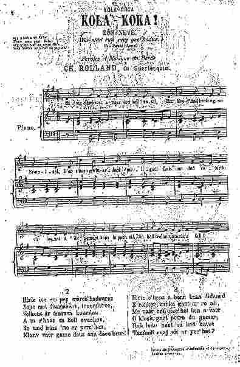
Un chant de réclame en breton pour "Kola-Koka" (Cliquer sur la partition pour l'entendre)
Le chant en question est dû au Barde
Charles Rolland
du Guerlesquin (1862-1940), surtout connu pour ses chants sur la guerre 14-18. Il écrira jusqu'à l'âge de 72 ans. C'était un socialiste convaincu qui avait fait peindre en rouge sa maison de Guerlesquin (30 km à l'est de Morlaix), avait traduit l'Internationale en Breton: "Ar bed a-bez en ur vro" et était un anticléricaliste virulent, ce qui ne l'empêcha pas de publier une feuille volante intitulée "Nouel ar Christen" (Noël du Chrétien)! Une grande partie de ses compositions fut publiée, comme ici, sous forme de
feuilles volantes
.
On peut supposer que "Kola-Koka" est la transcription en écriture bretonne "officielle" de "Kola-Coca", forme qui apparaît aussi sur la page-titre de la chanson. Le produit en question doit être le
Kola-Coca Genty
fabriqué à Chartres dont l'affiche ci-dessus porte la même mention que la feuille volante: "hors concours". Même si l'affiche ne comporte pas le mot "vin" et précise que le produit est "sans alcool", on notera que le mot breton
"gwin"
utilisé dans la chanson peut éventuellement désigner une boisson sans alcool:
"gwin mouar"
, le jus de mûre. Le couplet 7 (qui n'a pas pu être consulté) préciserait que la boisson peut être bue seule ou avec de l'eau ou de la limonade, ce qui pourait aussi faire penser soit à l'
apéritif Kola-Coca Barbin
distillé à Clermont-Ferrand, soit à l'
Elixir Mariani
.
Ce serait bien dans la manière d'Angelo Mariani d'avoir stipendié un chanteur socialiste breton connu localement pour promouvoir ses produits parmi la population bretonnante.
Il est difficile de percer les motivations de l'auteur quand il acceptait ce genre de commandes. Elémentaires ou alimentaires? Il est, en tout cas, très rare qu'un feuillle volante en langue bretonne soit imprimée à Paris. Les mentions "hors concours" et "membre du jury" laissent supposer que Ch. Rolland avait composé cette longue chanson (22 couplets de 6 vers) dans le cadre de l'un des concours auxquels il participait volontiers.
Ce qui est certain c'est qu'il s'agit d'un
texte publicitaire
qui met en exergue les
vertus roboratives
de la boisson en question, ajoute un touche d'
exotisme
(un tantinet colonial)
"kinniget gant plac'h kaer an Indez" (présentée par une jolie fille des Indes -
ce qui fait penser à la
Coca des Incas
, même si la coca vient des Andes et la noix de kola, d'Afrique) à l'argumentaire et insiste sur
l'authenticité des composants
utilisés par le fabriquant, à la différence, bien sûr, de ses concurrents (Strophe 2:
"Hirio e vez e pep marchadourezh nemed invañsion, tromplerezh": Aujourdh'ui toutes les marchandises ne sont que mensonge et tromperie...
).
En tout cas, cet exemple permet de ramener sur terre les fervents trop romantiques du chant populaire. Les chanteurs de province devaient vivre, défendre leur rang et affirmer leur présence, tout comme les notables de Paris qui ne rechignaient pas, tant s'en faut, à figurer parmi les
"Figures contemporaines"
du catalogue Mariani.
L'évolution de ces produits
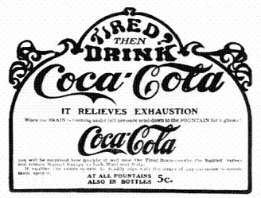
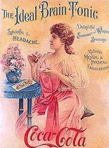
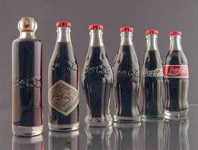
Evolution de la bouteille du médicament contre la fatigue et les maux de tête au soda rafraîchissant
Le fort taux de cocaïne du produit de Pemberton ainsi que dautres concurrents américains forcèrent Mariani à
augmenter ses dosages à 7.2mg par verre pour le marché américain
. Mariani ouvrit un bureau au 52 West 15th Street à New York, ainsi que des filiales à Londres et Montréal.
Le siècle touchant à sa fin, il devint finalement flagrant en Europe et aux États-Unis que la dépendance à la cocaïne était un véritable problème.
Coca-cola, quant à lui, fut forcé de dénaturer son extrait de coca en 1903.
La coca et ses applications thérapeutiques
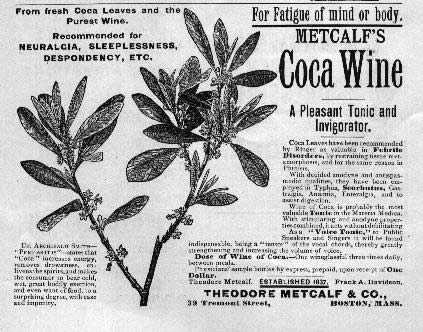
Un commentaire pharmaceutique sur son produit diffusé par Metcalf
Mariani ignorait ou feignait d'ignorer les problèmes que l'usage de la coca peut poser. Il composa et diffusa largement un livre sur la coca, dont une traduction anglaise parut en 1890, sous le titre
La coca et ses applications thérapeutiques
. L'ouvrage eut trois éditions en anglais. Il passe en revue les caractères botaniques, les propriétés l'histoire, l'utilisation et les applications thérapeutiques de la coca. On y trouve aussi les différentes formes médicinales proposées par Mariani en plus de la présentation vedette, le Vin: ce sont un élixir, un thé, une pâte et une pastille contenant 2 mg de Chlorhydrate de cocaïne.
Mariani écrit modestement:
"Immédiatement après l'importation de la feuille de Coca en Europe, nous conçûmes, le plan de faire des préparations à base de coca. Le nom du créateur fut aimablement ajouté à ses préparations par la profession médicale qui avait reconnu la supériorité de ses produits."
Le livre de Mariani est à peu près muet sur les troubles qui peuvent résulter de l'usage des feuilles de coca.
On trouve toutefois un commentaire sur une observation de Mantegazza selon laquelle, si de faibles doses ont un effet stimulant sur le système nerveux, de plus fortes (60g par exemple) provoquent une intoxication accompagnée d'une sensation de bien-être. Cet effet euphorisant était, évidemment une raison du succès du produit, mais dans une note, Mariani précisait que
"durant presque trente ans, même pris à hautes doses, le Vin Mariani
n'a jamais entraîné de cocaïnisme".
En revanche, il met en garde contre
"les
prétendus vins de coca
faits à partir de l'alcaloïde
cocaïne
".
La fin du Vin Mariani
C'est en vain que l'un des apologistes du Vin de coca, Emile Gautier, dans "Le Vin Mariani considéré au point de vue scientifique et au point de vue industriel" in "La Science française", repris dans "Album Mariani", vol.8, Paris, 1903, s'exclamait en 1903:
"Tout ce qu'on a débité à ce propos en Angleterre et en Amérique relativement au prétendu danger de cocaïnisme qui pourrait s'ensuivre n'est qu'un tissu de gasconnades et de blagues -bluff and humbug! Tout d'abord, la quantité de cocaïne incluse est trop minime pour faire du mal. Il y en a juste assez pour apaiser les nerfs exaspérés sans les paralyser ni les engourdir. On ne s'intoxique pas plus avec la cocaïne de la coca qu'avec la caféine du café."
Mariani consacra beaucoup de temps à dénoncer les contrefacteurs dans ses annonces publicitaires et à se défendre en justice . Il suivit activement le développement de ses produits jusqu'à sa mort en 1914.
La guerre allait bouleverser bien des choses en Europe. Cependant son vin se maintint de longues années encore sur le marché.
En 1954, le nom fut changé en
"Tonique Mariani"
et se vendait encore en
1963
.
A cette époque, il avait
cessé depuis 1910, comme on l'a dit, de contenir
le principe actif qui avait eu tant d'importance pour son inventeur,
de la coca
. La longue association
des deux noms de "Mariani" et de "coca" les avait rendus presque synonymes.
Le Coca Cola
Son illustre concurrent américain, apparu vingt ans plus tard en 1885, le
Coca Cola
, ne pouvant se prévaloir d'un nom de personne aussi connu, continua d'évoquer dans son appellation un ingrédient auquel on avait dû renoncer: la
coca
.
L'élève eut plus de chance que le maître: le "Pemberton's French Wine Coca" parvint à survivre à la Prohibition, au "Pure Food and Drug Act" de 1906 et à la l'inquiétude croissante du grand public devant le risque de dépendance à la cocaïne. Il devint la boisson universellement consommée que l'on connaît.
On notera toutefois:
Il existe une version du Vin Mariani qui porte encore ce nom et prétend posséder les mêmes vertus roboratives, revigorantes et rafraîchissantes. Elle est produite au Pérou et est commercialisée par une société britannique, la "Mariani Amalgamated, Ltd".
Sources
Et, puisqu'il est question de contrefaçon, il est temps de citer les sources que ce site a copiées servilement:
http://www.persee.fr/web/revues/home/prescript/article/pharm_0035-2349_1980_num_68_247_2084
http://www.euvs.org/fr/discover/man-behind-the-bottle/mariani sont également cités.
Autres sites mis à contribution:

Fond sonore: "Pour ton vin, pour ton cur" composé par Bernard Salvayre